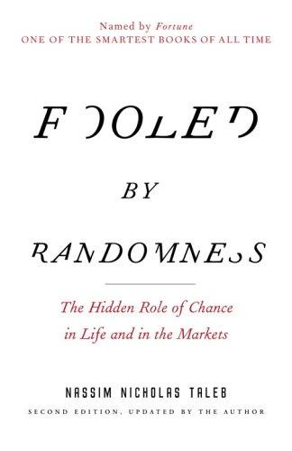

纳西姆·尼古拉斯·塔勒布（Nassim Nicholas Taleb）生于黎巴嫩，先后在巴黎和沃顿商学院接受教育，此后在华尔街从事衍生品交易长达二十余年，同时兼任学术研究工作。他深植于交易实践的经历，使其哲学思考从一开始便带有鲜明的反理论化倾向——他不信任那些在真实风险面前从未受过考验的模型与叙事。《随机漫步的傻瓜》（Fooled by Randomness）最初于2001年自行出版，2004年由兰登书屋以修订版重新发行，迅速成为金融界的异类经典。它是塔勒布"不确定性五部曲"（Incerto）的第一部，此后他陆续写出了《黑天鹅》《反脆弱》《床边的普罗克拉斯提斯》与《非对称风险》，共同构成一套关于概率、随机性与人类认知局限的完整体系。
全书的核心论点是：人类天生不擅长识别随机性，倾向于将偶然的成功归因于能力，将偶然的失败归因于外部因素。塔勒布将这种认知偏差命名为"幸存者偏差的隐形化"——我们看到的成功者，是从无数同样努力却失败者构成的"沉默公墓"中幸存下来的，但失败者不可见，我们便错误地认为成功是可重复的技能的产物。他引入了"随机游走的历史"这一思想实验：同一个人在无数个平行宇宙中运行，有多少个版本会成功？如果成功的版本寥寥，那么这个世界上那位成功者的辉煌，究竟有多少是技能，多少是随机？他进一步区分了"轻尾"（Mediocristan）与"重尾"（Extremistan）两种分布世界：在重尾分布主导的金融市场中，标准统计学工具严重低估了极端事件的概率，依赖正态分布建立的风险模型因此系统性地失效。
这本书出版后迅速在投资与商界引发反响。《华尔街日报》将其列为有史以来最重要的商业书籍之一。对冲基金经理迈克尔·莫布森（Michael Mauboussin）在其著作中多次引用塔勒布的框架，称《随机漫步的傻瓜》"从根本上改变了我对成功与失败归因的理解"。塔勒布本人在书中透露，正是通过长期阅读卡尔·波普尔、弗里德里希·哈耶克以及认知心理学文献，他逐渐形成了将哲学怀疑主义与金融实践相融合的独特视角。值得注意的是，本书的价值主要来自其对认知框架的冲击，而非对具体投资策略的指导——塔勒布从不宣称自己能够"战胜"随机性，他所倡导的是对随机性保持清醒的认识，从而建立真正的概率性思维。
对于投资者与商业决策者而言，《随机漫步的傻瓜》的意义在于迫使读者重新检视自己对"成功"与"因果"的朴素直觉。在充满噪音的短期市场中，优秀的决策过程可能长期产生平庸的结果，而糟糕的判断也可能在某个时段带来丰厚回报——这恰恰是评估投资能力最困难之处。查理·芒格长期强调的"逆向思维"与"避免愚蠢"，在某种程度上与塔勒布的论点形成互补：芒格教人如何思考，塔勒布则揭示了哪些思考方式是人类认知深处难以根除的陷阱。两者合读，是建立稳健投资心智的有效路径。